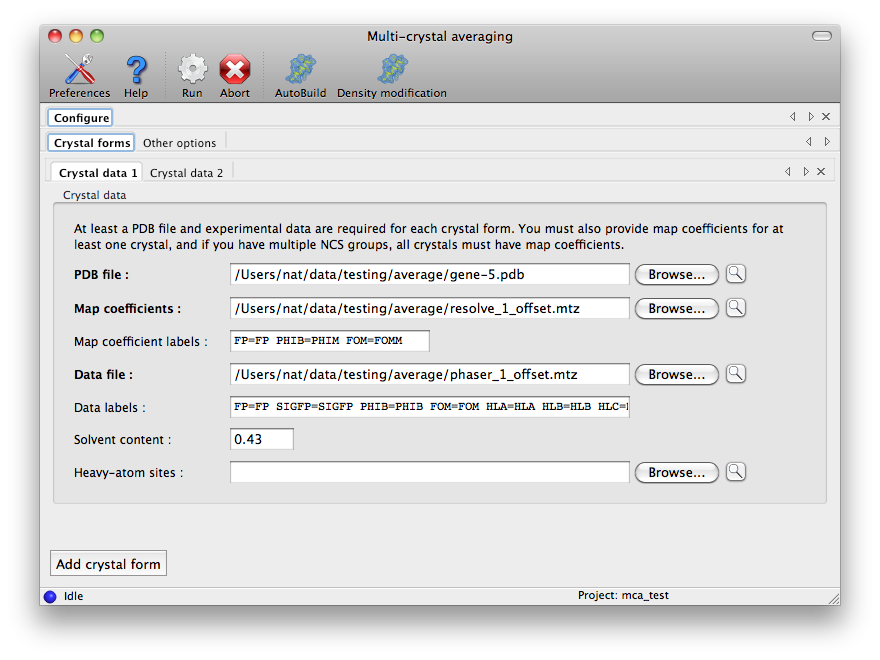
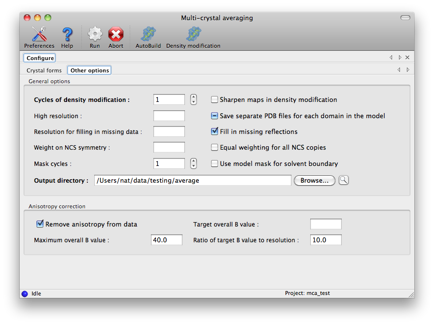
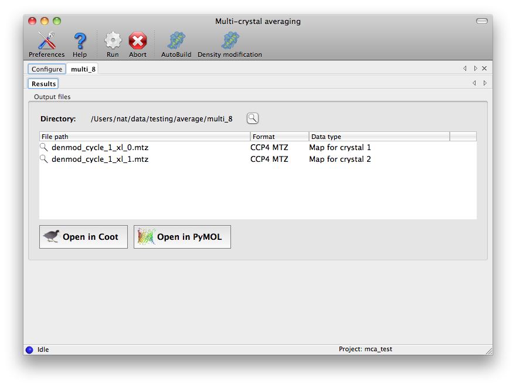

phenix.multi_crystal_average is a tool for carrying out density modification, including NCS symmetry within a crystal and electron density from multiple crystals.
The inputs to phenix.multi_crystal_average are a set of PDB files that define the NCS within each crystal and the relationships of density between crystals, structure factor amplitudes (and optional phases, FOM and HL coefficients) for each crystal, and starting electron density maps for one or more crystals.
The PDB files should each be composed of the exact same chains, placed in a different position and orientation for each NCS asymmetric unit of each crystal. You might create these PDB files by molecular replacement starting with the same search model for each crystal. You should not refine these MR solutions; they are only used to get the NCS relationships and the NCS will be more reliably found if the models for all NCS asymmetric units are identical. You can break the NCS asymmetric unit into domains and place them independently. You can specify the domains by giving them unique chain IDs, (or you can use the routine edit_chains.py to do this for you, see below). A separate NCS group will be created for each domain. Additionally if your NCS asymmetric unit consists of more than one chain (A+B for example) then each chain will always be treated as a separate NCS group.
phenix.multi_crystal_average first uses the supplied PDB files to calculate NCS operators relating the NCS asymmetric unit in each crystal to all other NCS asymmetric units in that crystal and in other crystals. This is done by adding the unique chains in one crystal to each PDB file in turn, finding all the NCS relationships from all chains in that composite PDB file, and removing duplicate identity transformations. For example, suppose the NCS asymmetric unit is one chain (A,B,C....). Then to to relate all NCS asymmetric units to the NCS asymmetric unit of crystal 0, phenix.multi_crystal_average will compare all chains in the PDB file for each crystal to the unique chain in the PDB file for crystal 0, generating one NCS operator for each chain in each crystal. In this process the unique chain (in this case the NCS asymmetric unit of crystal 0) is renamed to a unique name (usually "**") and a composite PDB file is created with this chain along with all the chains in the PDB file for the crystal being considered, and phenix.simple_ncs_from_pdb is used to find the NCS operators. The centroids of the chains defining NCS are used as centers of the regions where the NCS operator is to be applied.
If the supplied PDB files have more than one domain or chain in each NCS asymmetric unit, then the domains or chains are grouped into separate NCS groups.
Once NCS operators have been identified, density modification is carried out sequentially on data from each crystal. During density modification for one crystal, the current electron density maps from all other crystals are used in generating target density for density modification in exactly the same way as NCS-related density is normally used when only a single crystal is available.
First the asymmetric unit of NCS is defined, in this case including the density in all NCS copies within the crystal being density modified as well as the density in all NCS copies in all other crystals. The asymmetric unit of NCS is the region over which the NCS operators apply. It is assumed to be identical for all NCS copies for all crystals, with orientation and position identified by the NCS operators. It is identified as the region over which all NCS copies have correlated density. If a mask for the protein/solvent boundary is supplied (by specifying "use_model_mask"), then the asymmetric unit of NCS is constrained to be within the non-solvent region of the map. Alternatively, if you request that the domains provided in your PDB files be used to define the NCS asymmetric unit (by specifying "write_ncs_domain_pdb") then the the NCS asymmetric unit (for each NCS group) is limited to the region occupied by the corresponding chains in your PDB files.
Then a target density map is created for the crystal being density modified. For each NCS copy in this crystal, the average density for all other NCS copies in this and other crystals is used as a target.
Finally, statistical density modification is carried out using histograms of expected density, solvent flattening, and the NCS-based target density for this crystal. The process is then repeated for all other crystals. For those crystals for which no starting phases were available, one additional step is carried out in which the target density map is used by itself to calculate a starting electron density map (using RESOLVE map-based phasing).
This entire process is carried out several times, leading to electron density maps for all crystals that typically have a high level of correlation of density within all NCS copies in each crystal and between the corresponding NCS regions in different crystals.
denmod_cycle_1_xl_0.mtz: Density-modified map coefficients for crystal 0, cycle 1. Crystal 0 is the first crystal specified in your pdb_list, map_coeff_list, etc.
denmod_cycle_5_xl_1.mtz: Density-modified map coefficients for crystal 1, cycle 5. These map coefficients are suitable for model-building. They also contain HL coefficients that can optionally be used in refinement. As the HL coefficients contain information from all crystals they may in some cases be useful in refinement (normally you would only use experimental HL phase information in refinement as the NCS-based information would come from your NCS restraints in refinement).
The GUI is listed in the "Maps" category of the main interface. The configuration tab contains a set of tabs for the crystal forms:

The label strings are automatically filled in when an MTZ file is loaded; these normally do not need to be further edited. At least one crystal form must have map coefficients, and all are required to have PDB and data files, as well as the estimated solvent content. All other options are on the second tab of the configuration panel:
At the end of the run, the final density-modified and averaged map coefficients will be listed in a new tab. Selecting one of these and clicking the Coot or PyMOL buttons below will load the map coefficients and corresponding model for that crystal form.
Running phenix.multi_crystal_average from the command line is easy. Usually you will want to edit a small parameter file (run_multi.eff) to contain your commands like this:
# run_multi.eff commands for running phenix.multi_crystal_average
# use: "phenix.multi_crystal_average run_multi.eff"
multi {
crystal {
pdb_file= "gene-5.pdb"
map_coeffs = "resolve_1_offset.mtz"
datafile = "phaser_1_offset.mtz"
datafile_labin = "FP=F SIGFP=SIGF PHIB=PHI FOM=FOM HLA=HLA HLB=HLB HLC=HLC HLD=HLD"
solvent_content = 0.43
}
crystal {
pdb_file= "multi.pdb"
map_coeffs = "None"
datafile = "multi.pdb.mtz"
datafile_labin = "FP=FP"
solvent_content = 0.50
}
}
Then you can run this with the command:
phenix.multi_crystal_average run_multi.eff
In this example we have 2 crystals. Crystal 1 has starting map coefficients in crystal_1_map_coeffs.mtz and data for FP in crystal_1_data.mtz. The contents of this crystal are represented by crystal_1.pdb. The second crystal has no starting map, has data for FP as well as PHI and HL coefficients in crystal_2_data.mtz, and the contents of this crystal are represented by crystal_2.pdb. The solvent contents of the 2 crystals are 0.43 and 0.50, and 5 overall cycles are to be done.
NOTE: Usually you will want to supply coefficients for a density-modified map (if available, and perhaps with NCS as well) for your starting map coefficients, and you will want to supply experimental phases and HL coefficients for your datfiles.
The column label strings like "FP=FP" are optional...if you say instead "None" then phenix.multi_crystal_average will guess them for you. NOTE: You need to put quotes around the None. Also note: the order of entering pdb_list, map_coeff_list, data_file_list, solvent_content_list etc matters. They must all match.
If your PDB files have more than one NCS domain within a chain, then you may want to split the chains up into sub-chains representing the individual NCS domains. This will provide a better definition of the NCS operators when the PDB files are analyzed.
You can use the jiffy "edit_chains.py" to do this. This jiffy splits your chains up into sub-chains based on the domains that you specify in "edit_chains.dat".
NOTE: edit_chains.py only works if your chains have single-letter ID's. (It simply adds another character to your chain ID's to make new ones.) If you have two-letter chain ID's, then you'll have to do this another way. To use it, type:
phenix.python $PHENIX/phenix/phenix/autosol/edit_chains.py file.pdb edited_file.pdb
The file edit_chains.dat is required and should look like:
A 1 321 A 322 597 A 598 750 A 751 902 A 903 1082 B 1 58 B 424 425 B 59 101 B 343 423 B 102 342
where the letter and residue range is your chain ID and residue range for a particular domain. You should specify these for ALL chains in your PDB files (not just the unique ones).
If you specify the parameter write_ncs_domain_pdb=True, then phenix.multi_crystal_average will write out domain-specific PDB files for each domain in your model (based on its analysis of NCS, one for each NCS group). Then it will use those domain-specific PDB files to define the region over which the corresponding set of NCS operators apply. This is generally a good idea if you have multiple domains in your structure.
The format for the parameters file for phenix.multi_crystal_average has changed (twice) (from a list of inputs for pdb_list etc, to several groups of inputs, one for each crystal.)
If the NCS asymmetric unit of your crystal contains more than one type of chain, phenix.multi_crystal_average will consider it to have more than one domain. This limitation comes from phenix.simple_ncs_from_pdb, which assigns one NCS group to each unique chain in the NCS asymmetric unit. If you would like phenix.multi_crystal_average to consider several chains as a single NCS group, then you would need to rename your chains and residues so that all the residues in a single NCS group have the same chain name and so that residue numbers are not duplicated. Normally you not need to do this, but if you want to use phenix.multi_crystal_average to generate phases for one crystal from another and you have more than one chain in the NCS asymmetric unit you would have to do this.
If your NCS asymmetric unit has more than one domain (more than one type of chain chain, or else multiple domains within a chain that have different arrangements in different NCS asymmetric units) then phenix.multi_crystal_average requires that you provide map coefficients for all crystals. This is because phenix.multi_crystal_average cannot use the PDB files you provide to generate the NCS asymmetric unit directly at this point (i.e., it cannot use pdb_domain in RESOLVE.) Therefore if you don't provide map coefficients for one crystal then it does not have a way to individually identify the region occupied by each domain in the NCS asymmetric unit for that crystal. This isn't a problem if there are not multiple domains or types of chains in the NCS asymmetric unit because the automatic method for generation of the NCS asymmetric unit can be used.
Normally you should supply PDB files defining the NCS in your crystals in which all the chains have identical sequences and conformations within each NCS copy. This is not absolutely required, however. If your PDB file contains chains that are not identical then NCS will be estimated from the chains you provide. It may be necessary to set the parameter:
simple_ncs_from_pdb.maximize_size_of_groups=True
to get this to work if the chains have insertions, deletions, or sequence differences.
The size of the asymmetric unit in the SOLVE/RESOLVE portion of phenix.multi_crystal_average is limited by the memory in your computer and the binaries used. The Wizard is supplied with regular-size ("", size=6), giant ("_giant", size=12), huge ("_huge", size=18) and extra_huge ("_extra_huge", size=36). Larger-size versions can be obtained on request.